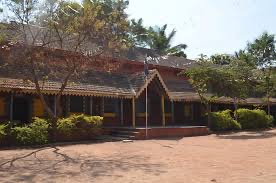
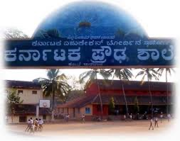
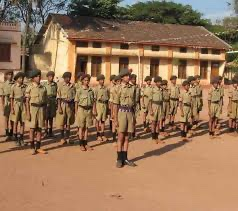
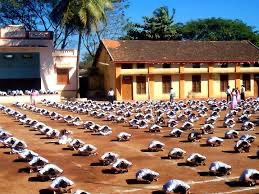
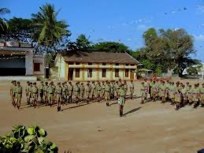
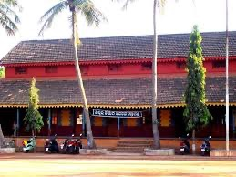

Affordable Quality Education in the Heart of Dharwad


Government Aided
SSLC Excellence
Our Story
Karnataka High School, Fort Dharwad has been a cornerstone of quality education in Dharwad city for over four decades. Located in the historic Fort area off Fort Road, near Gandhi Chouk, we are a government-aided institution proudly serving the community with affordable, value-driven schooling.
Affiliated with the Karnataka State SSLC Board, the school runs classes from LKG through Standard 10. Our alumni — stretching back to the 1919 SSLC batch and beyond — remain deeply connected, actively contributing to campus infrastructure and the school's enduring legacy.
What We Offer
Holistic curricula designed to nurture every student's potential from early childhood through SSLC
Classes VIII – X
Karnataka State Board (SSLC) curriculum with a focus on strong fundamentals, disciplined learning, and board exam excellence. Our school serves as a designated SSLC examination centre.
class V - Class VII
Our co-educational upper-primary section builds a rock-solid foundation with bilingual learning, 20 computers for digital literacy, and a nurturing classroom environment.
SSLC Excellence Centre
Officially designated as an SSLC Examination Centre for Dharwad district, reflecting the trust placed in our institution by the Karnataka government and education authorities.
Our Campus
A safe, stimulating environment designed to support learning at every level
Curated collection of books, a reading corner, and a book bank to foster a love of learning beyond the classroom.
Functional digiboards with internet connectivity bring interactive, multimedia learning to every lesson.
20 computers in the primary section equip students with essential digital skills from an early age.
Open grounds for physical activity, sports, and play — nurturing fitness, teamwork, and healthy competition.
Functional drinking water and hand-wash facilities ensure health and hygiene standards are maintained daily.
Pucca boundary walls around the campus and a generator for power backup ensure safety and uninterrupted learning.
Disability-friendly ramps and inclusive sanitation facilities designed to welcome every student.
6 well-maintained teaching rooms and 9 additional spaces including offices, labs, and activity areas in a good-condition private building.
Beyond the Classroom
At Karnataka High School, education extends far beyond textbooks. We believe that holistic development — cultural expression, physical fitness, and social responsibility — shapes truly well-rounded individuals.
Annual Day performances, Kannada Rajyotsava celebrations, dance, drama and music events that celebrate our rich heritage.
Inter-school competitions, Sports Day, and regular physical education to build teamwork, discipline and endurance.
SSLC farewell ceremonies, science exhibitions, quiz competitions and cultural fests that make every school year memorable.
Social awareness initiatives, cleanliness drives, and values education rooted in discipline and respect for all.




Voices of Our Community
Join Our Family
We welcome students who are eager to learn and grow. Our admissions process is straightforward, our fees are genuinely affordable, and our academic environment is structured for success.
Visit the school office or call us between 9:00 am – 5:00 pm, Mon–Sat.
Bring previous academic records, TC, birth certificate and passport photos.
Complete admission formalities. Academic year starts in April.
Our Pride
Four decades of graduates who carry the KHS spirit wherever life takes them
The 1976 SSLC batch — one of the earliest cohorts in our records — has spearheaded the renovation of the school's Science Hall, a testament to the enduring pride our alumni hold for Karnataka High School.
From teachers and engineers to entrepreneurs and public servants, our alumni network spans every walk of life, and many continue to mentor current students and support the school's development.
Connect with AlumniGet In Touch
We'd love to hear from you. Reach out for admissions, enquiries, or any other information.
Fort Road, near Civil Hospital ,
Dharwad – 580001,
Karnataka, India
Monday – Saturday: 9:00 am – 5:00 pm
Sunday: Closed
Monday - Friday: 09:00 am – 05:00 pm
Saturday: 08:00 am – 02:00 pm